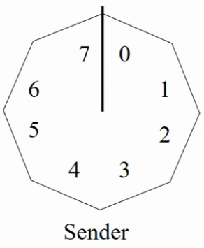
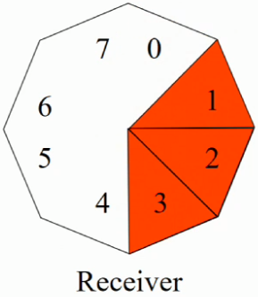

Flow Control
Flow control is done in the Data-Link layer and the Transport layer.
Flow control is " the management of data flow between between nodes in a network so that the data can be handled at an efficient pace."
In Computer Networks flow control is applied by refusing additional node connections until the flow of traffic has subsided. There are numerous network protocols that are designed in order to achieve this refusal of nodes.
One of those protocols is the Automatic Repeat reQuest (ARQ) protocol. Just for the shits'n'giggles it is also known as the Positive Acknowledgement Retransmission (PAR) protocol.
ARQ protocol
The ARQ protocol works under 2 main assumptions:
- Single-bit sequences are used (e.g. 1001101110010001001)
- There is an endless supply of data available.
Here is the psuedocode to describe the process of the ARQ protocol:
sendFrame(A,B) // flow control if (timeout) -> sendFrame(A,B) // error control reject(duplicate frame, duplicate ACK, frames with CRC errors)
The best utilisation of flow control can be defined using a cool formula. Here are the parameters used:
- TT = Transmission Time (time taken for frame to physically appear on the transmission link)
- RTT = Round Trip Time (time taken to travel from A -> B -> A)
Let's explpore what these two parameters actually mean in the network. Best way to do that is with a diagram!
Figure 3.8a
Figure 3.8a above is a basic visualisation of how ARQ is working.
A frame propogates through some wire (the blue line) that is connected to A. The amount of time it takes to arrive at A is called the Transmission Time (TT).
Once the entire frame arrives at A, A sends two dataframes to B: the Data and an Acknowledgement (ACK).
Once B receives the Data and ACK, it sends the same Data and it's own personal ACK back to A.
Once A receives B's Data and ACK, we record the Round Trip Time (RTT). The time it took to go from A -> B -> A
There are some funky formulas you can use to calculate the TT and RTT.
- len(frame) simply means the length of the frame in bits.
- TR is the Transmission Rate in bits per seconds.
- RTD is the Round Trip Distance in metres. How much distance was travelled in going from A -> B -> A?
- PS is the Propogation Speed in metres per second.
Also the best utilisation of the network gives you a number that indicates how much % was used:
Unfortunately there are some major disadvantages to the ARQ protocol:
- Requires 2 dataframes - one for the data, one for the ACK -> poor channel utilisation
- Can only send 1 frame at a time
This brings me onto my next topic, the Piggy-Backed ARQ protocol...
Piggy-Backed ARQ protocol:
The Piggy-Backing approach makes a simple change - combine the data and ACK into 1 dataframe.
This is why we call this the Piggy-Backed ARQ protocol, because the only difference is that ACK is literally getting a piggy-back on the data.
The advantages of the Piggy-Backed ARQ protocol:
- Only 1 dataframe going forward and backwards -> better channel utilisation
The disadvantages of the Piggy-Backed ARQ protocol:
- You can still only send 1 frame at a time.
- if (B has no data to send back to A) --> A will timeout because it is waiting for an ACK --> A will retransmit message --> poor utilisation solution - give both A and B a timer to ensure A does not wait forever.
This brings me onto my next topic, the Sliding Window protocol...
Sliding Window protocol:
The ARQ protocols may cause big performance issues as the sender (A) may wait for a long time for acknowledgement even if it has next packet ready to send.
The Sliding Window protocol handles this efficiency issue by sending more than one packet at a time with a larger sequence numbers. The idea is same as pipelining in Computer Architecture.
You probably noticed that the one reoccurring disadvantage of the ARQ protocols was that "you can only send 1 frame at a time". The Sliding Window protocol solves this issue!
But... how? How does this protocol send more than 1 frame at a time? Let's look into that using some diagrams:
Both the sender and receiver have windows. The data they show means different things:
- Sender window - the messages that have been sent but not acknowledged
- Receiver window - the messages that will be accepted
The receiver has a buffer to store those frames.
| Sender window | Receiver window | Description |
|---|---|---|
|  |  |
|
 |
| |
| ||
|  |
| |
|
The senders window and the receivers window are independent from each other. This means two things:
- The window sizes do not necessarily have to be the same.
- They do not have to rotate at the same time.
One-bit Sliding Window protocol
(apparently) exactly the same as the ARQ protocol
- sizeof(sender window) = 1
- sizeof(receiver window) = 1
The sender sends a frame and then waits for ACK before sending the next frame - in other words, you can't send more than 1 frame at a time. Just like ARQ! What a coinkydink!)
If no ACK is received within a certain time limit, the frame is sent again.
But what if the sender and reciever both send at the same time? -> poor utilisation because half the frames are duplicates.
Go Back N protocol:
Improvement on the One-bit Sliding Window protocol.
if (window size) == N, there must be at least N+1 sequence numbers.
- sizeof(sender window) > 1
- sizeof(receiver window) = 1
In Go Back N we don't have to wait for an ACK before sending the next frame.
Therefore the sender could send 8 frames before blocking, or 4 frames before blocking, or 18 frames before blocking, etc...
- In general, this protocol allows the sender to send N frames before blocking.
- The receiver only accepts frames that arrive in order.
- But the receiver cannot accept frames out of order, or more than 1 frame at a time.
The utilisation for the Go Back N protocol is a massive improvement from previous protocols we have looked at.
The larger N is, the better the utilisation.
Figure 3.8b
As you can see in Figure 3.8b above, when an error occurs the receiver discards all the subsequent frames coming after the erroneous frame.
The sender continues transmitting the frames unaware that the frames are being discarded by the data-link layer until timeout.
Then the sender will resend all the discarded frames.
Selective Repeat protocol:
Improvement on the Go Back N protocol.
if (window size) == N, there must be at least 2N sequence numbers.
- sizeof(sender window) > 1
- sizeof(receiver window) > 1
In Selective Repeat we don't wait for an ACK before sending the next frame. (exactly the same as Go Back N)
- In general, this protocol allows the sender to send N frames before blocking.
- The main difference between Selective Repeat and Go Back N, is that Selective Repeat doesn't discard the frames after the erroneous frame.
- But the receiver cannot accept frames out of order, or more than 1 frame at a time.
Figure 3.8c
As you can see in Figure 3.8c above, when an error occurs in this protocol, the receiver transmits a NAK to sender.
Then the receiver buffers the subsequent frames.
The sender continues transmitting the frames unaware until the NAK is received.
And the sender sends the erroneous frame 2 again.
You may be asking yourself 'Why don't we have to acknowledge frames 3,4,5 ?'.
- Because with Selective Repeat you do not have to individually acknowledge each frame.
Selective Repeat only acknowledges the highest in-order frame. What do I mean by 'highest in-order frame' ?
- Acknowledging frame 5 means you acknowledge the buffered frames 2,3,4 in one go!
Summary of Flow Control protocols:
If errors are common, Selective Repeat has the best utilisation of all protocols. In general, Selective Repeat is the best Flow Control protocol.
Visualisation of Go Back N and Selective Repeat protocols from the lecture (pretty useful!)
| Protocol | Description | seq_nums required to recover from duplicate frames | sizeof(sender window) | sizeof(receiver window) |
|---|---|---|---|---|
| One-Bit Sliding Window |
| n/a | 1 | 1 |
| Go Back N |
| N+1 | > 1 | 1 |
| Selective Repeat |
| 2N | > 1 | > 1 |